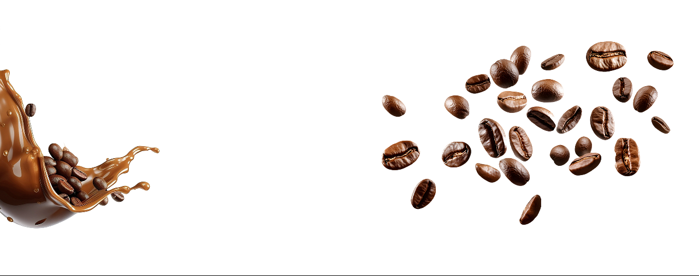

Keep calm and get a coffee.
Learn the best coffee recipes!
Americano
Ingredients
- 2 Shots of Espresso
- 11/4 Cups of Hot Water
How to make it
- Boil the water and pour it into your favorite mug.
- Slowly pour the brewed espresso into the hot water.
Cappuccino
Ingredients
- 1 Shot of Espresso
- 2/3 of Cup Milk of Your Choice
- A Pinch of Cinnamon or Chocolate Shavings (optional)
How to make it
- brew one shot of espresso
- froth your warmed milk or dairy alternative
- pour the espresso shot into your favorite mug
- add the frothed milk or dairy alternative
- sprink the cinnamon or chocolate shavings on top